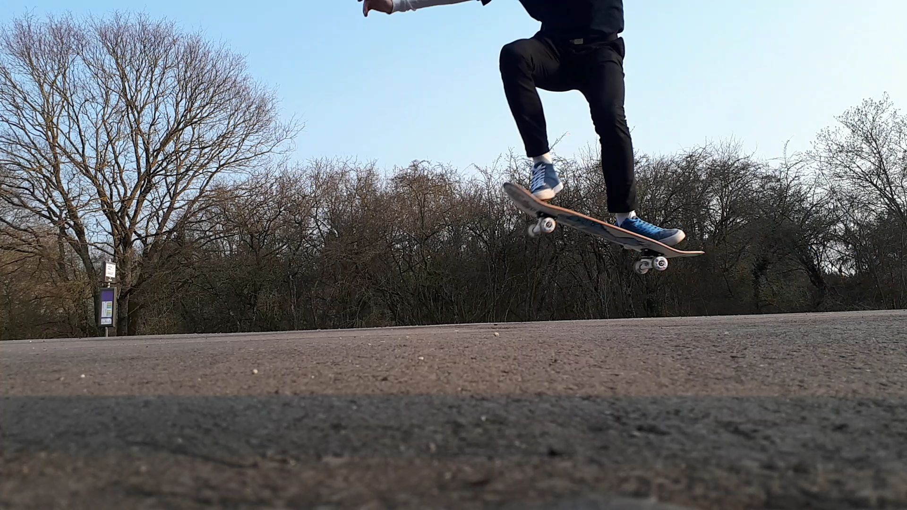

Ma page twitter
Ma page twitter
 Ma page Facebook
Ma page Facebook

Mon album photo 
Depuis son apparition en Californie dans les années 1960, le skate est, plus qu'une discipline, un art de vivre où le vêtement joue un rôle central. Baskets techniques, pantalons larges et chemises graphiques, ce vestiaire parfaitement codifié obéit à des fondamentaux qui, en près de soixante ans, n'ont pas bougé. Echappatoire stylisée aux codes bourgeois, mouvement de liberté et de défiance ancré dans la culture urbaine des métropoles américaines, le skate et son esthétique ont fait le tour du monde et sont toujours synonymes d'une douce rébellion. Aujourd'hui, ce sont deux générations qui se rencontrent autour de cette culture : d'un côté, des stylistes comme Julien David, qui se réapproprient l'esthétique des années 1990 de leur jeunesse, de l'autre, une jeune génération de consommateurs née pendant cette même décennie qui la découvre et joue avec ses accents de liberté. (CF:lemonde.fr) Dans cette vidéo du magazine télévisé RidingZone on comprend l'évolution des marques de skate dans le streetwear actuel:
La marque californienne s’est très vite installée sur le marché des sports de glisse et des sports alternatifs (Skateboard, Snowboard, BMX) et elle s’est entourée de skaters professionnels afin de répondre à une demande croissante. En effet au début des 70, de nombreux skaters recherchent la paire de chaussures idéale. C’est ainsi que Tony Alva et Stacy Peralta vont participer au design d’une toute nouvelle paire, déclinée en rouge et en bleu ; la « Era », qui sortira en 1975. Ce modèle deviendra une référence pour toute une génération de skaters, une référence encore d’actualité aujourd’hui.
Fondé en 1981, Thrasher était à l'origine 1 un magazine de skateboard. Son rédacteur en chef, Jake Phelps, dirige d'ailleurs la ligne éditoriale et la planche à roulettes avec la même habileté. La notoriété du magazine a augmenté rapidement grâce au prix du « Skater of the Year », qu'il décernait chaque année. Fort du succès de la version papier, le label a voulu retranscrire son ADN à travers une ligne de vêtements dont le logo imprimé est aujourd'hui reconnaissable entre mille. Que ce soit sur des hoodies ou des tee-shirts, on le voit aujourd'hui fleurir de manière virale.
Facilement reconnaissable par son logo en forme de rectangle rouge, Supreme est absolument partout : à la dernière Fashion Week, sur les influenceuses de la mode et dans les magazines. Pour commencer, si vous n’aimez pas l’emblématique logo de la marque, passez votre chemin. Car c’est lui qui s’affiche sur toutes les pièces mode et qui donne ce petit truc en plus à un simple t-shirt blanc. Grâce à lui, on affirme sa street credibility, même avec un look preppy ou glamour. Niveau prix, il faut compter 28€ pour un t-shirt basique, 60€ pour une casquette et 158€ pour un sweat à capuche. Des prix qui peuvent vite grimper en revente sur internet. C’est le risque à prendre, quand on distille sa collection au compte-goutte. En créant l’envie, Supreme a monté un empire de la mode street.